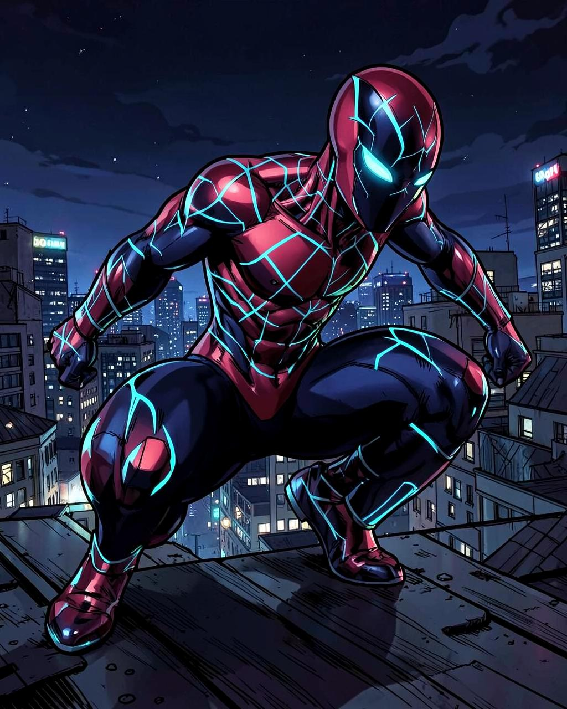
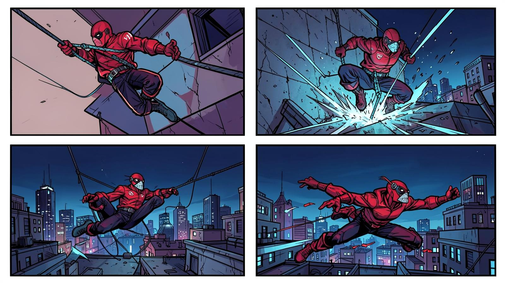

Clean streets.
Stronger
neighborhoods.
Eco-Spidey HQ turns everyday citizen reports into rapid cleanup missions across Delhi. Upload photos, track issue resolution in real time, and upvote critical neighborhood hotspots before sunrise.

See Delhi. Move with purpose.
Explore civic hotspots across Delhi. Click markers to view photographic evidence, upvote priority issues, and track status from Reported to In Progress to Resolved.
Data for Municipal Authorities
Real-time civic intelligence: track resolution velocity, hotspot severity by Delhi sector, and citizen upvoting density to deploy cleaning squads where they are needed most.

Proof beats applause.
The leaders moving the needle on the streets of Delhi, measured in verified cleanups logged, material recovered, and neighborhood upvotes won.
Join the Squad →
Signal
Spot it. Take a photo. Pin the Delhi hotspot. Send exact coordinates to the command center.
Deploy
Turn a waste sighting into an immediate neighborhood crew response with civic tracking.
Clear
Close the loop, verify cleanliness with follow-up photos, and log real civic impact into the database.
Spider-Verse Action Poses
Explore the distinct operational action stances utilized during Delhi civic response and cleanup operations. Slide through tactical modes.
Wisdom from the web.
Every hero in the Spider-Verse lives by a code. Transforming neighborhoods and streets starts with everyday courage, resilience, and accountability.
With great power comes great responsibility.
Anyone can wear the mask. You could wear the mask. If you didn't know that before, I hope you do now.
It's a leap of faith. That's all it is, Miles. A leap of faith.
No matter how many hits I take, I always find a way to come back. Because this city needs me.
We are who we choose to be. Now choose!
In my universe, I'm the one who stands between the innocent and the dark.
See something?
Spin a signal.
Upload photographic evidence and descriptions directly to the Delhi Civic Command database. Citizens can immediately upvote and track resolution.
